Breaking OpenAI’s “Suppression” Spell: Claude 3 Is Praised and Mocked at the Same Time
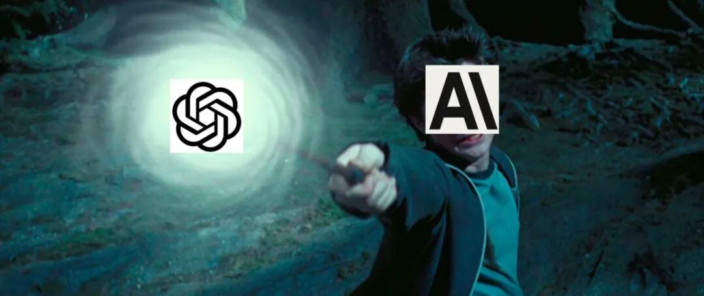
After China’s large-model industry spent months competing over models, then applications, and then ecosystems, the underlying foundation-model race finally saw a genuine breakthrough with the release of Claude 3.
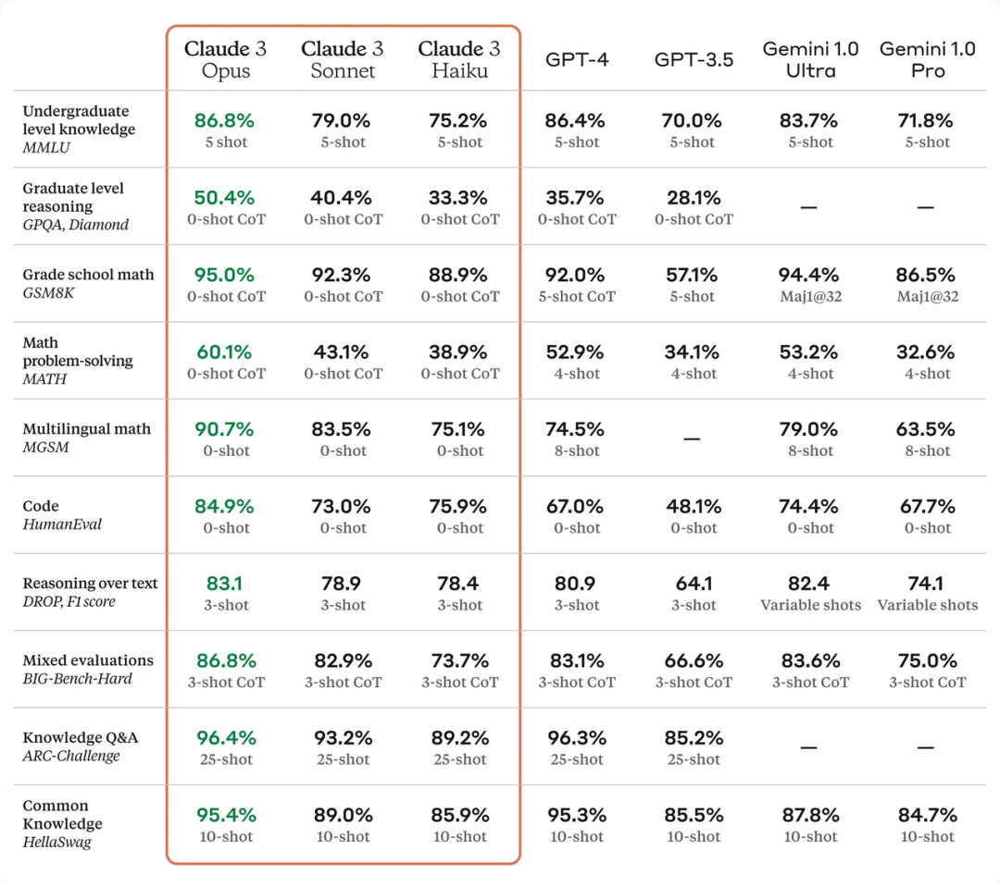
Claude 3 has plenty of impressive features: extremely fast responses, strong vision capabilities, a 200K-token context window, and accuracy improvements across many datasets and tasks. But unlike the launch video for Gemini, which tried to create the feeling not merely of “beating GPT-4” but of surpassing the GPT-4 paradigm itself, Claude 3 feels more like a major refinement along a development path that GPT-4 had already defined.
One interesting point is that the Claude family has actually maintained strong performance since its launch. It has usually ranked second or third on major evaluation boards, and this time Claude 3 even managed to surpass GPT-4 on a number of benchmarks. Yet in public discussion, the name generating the most attention is still OpenAI.
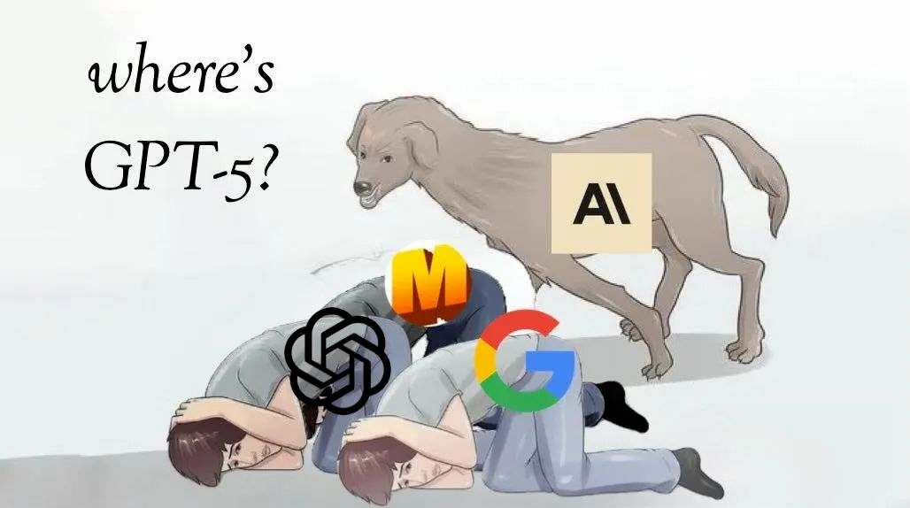
Search for almost any news or commentary about Claude 3 and OpenAI or GPT-4 is likely to appear alongside it. Of course, part of the reason is that Claude 3’s biggest selling point is precisely that it “beats GPT-4.” But from the perspective of brand awareness, the asymmetry is striking: if OpenAI released GPT-4.5 or GPT-5, it is hard to imagine headlines feeling obligated to mention Claude.
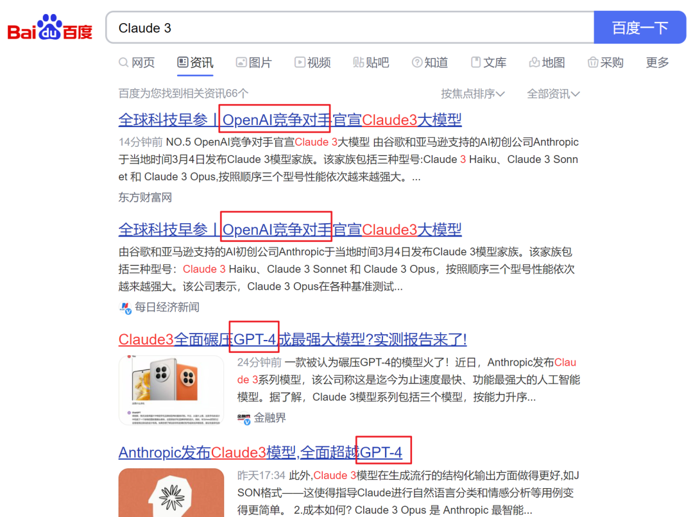
The same pattern appears in online communities. When people saw Claude 3’s performance, one of the first reactions was not simply excitement about Claude—but greater anticipation for GPT-5.
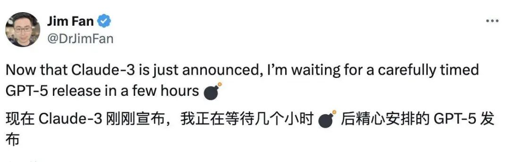
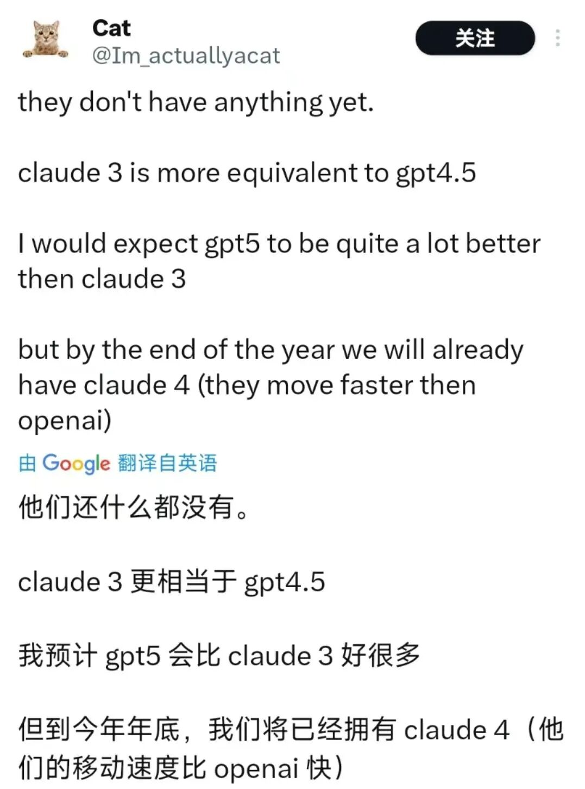
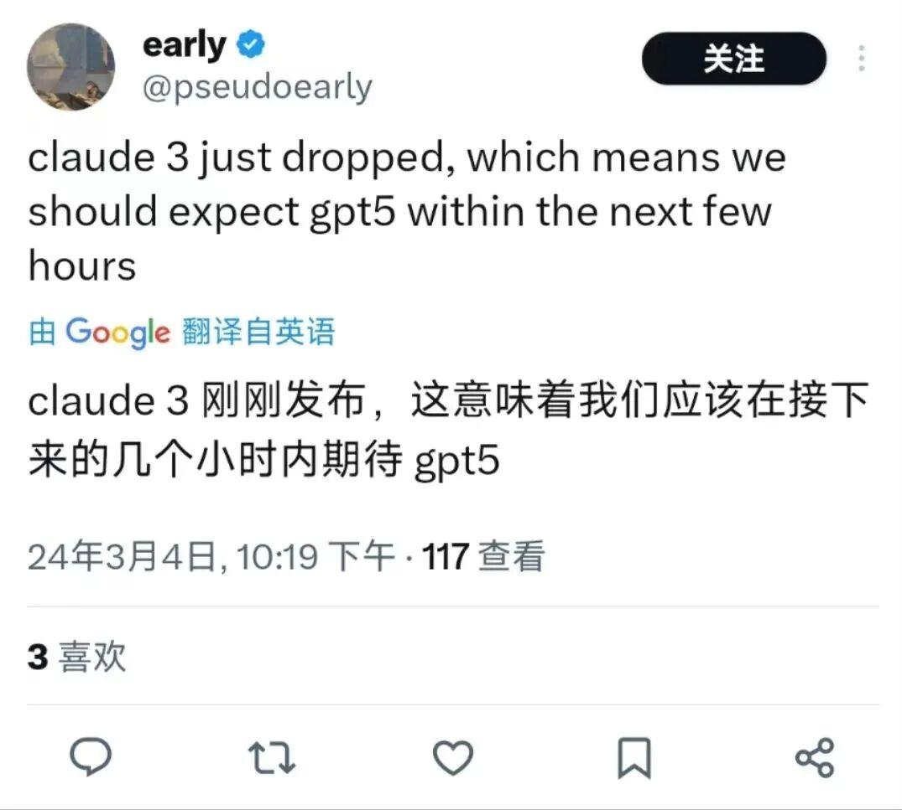
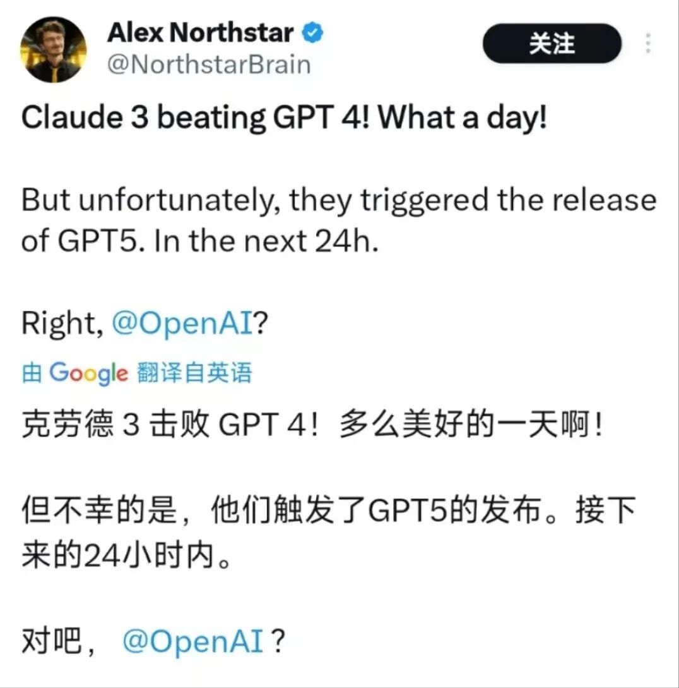
That expectation is not entirely baseless. Three months earlier there had already been rumors about a possible GPT-4.5. More importantly, when Google released Gemini 1.5 Pro in February, OpenAI unveiled Sora on the very same day. Gemini 1.5 Pro barely had time to dominate the headlines before the information cycle was flooded by Sora.
A Chinese researcher, Zhang Junlin, recently summarized this pattern as a kind of “suppression-chain theory.” In today’s foundation-model market, OpenAI sits at the top as the undisputed incumbent. Thanks to its first-mover advantage, it can potentially use product releases to suppress competitors that appear capable of catching up, including Google and Anthropic.
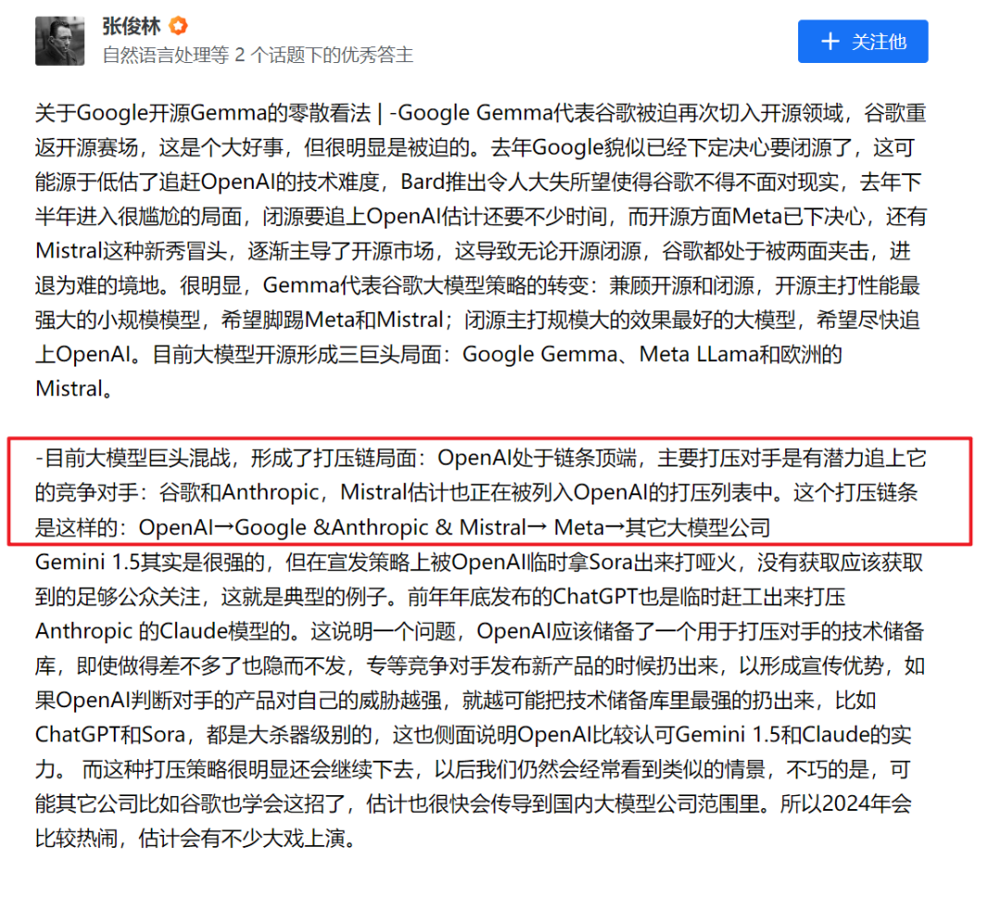
The theory imagines OpenAI at the top of a chain with many followers below. Because of its first-mover advantage, OpenAI can maintain a “technology reserve” containing strong models that have been developed but not yet released. Instead of always launching a new model as soon as it is ready, OpenAI can wait for competitors to announce their products and then select something from its reserve that is sufficiently strong to overshadow the challenger.
This strategy works particularly well because foundation-model products remain highly homogeneous. When OpenAI launches a clearly stronger general-purpose model, a competitor’s large R&D investment may fail to translate into meaningful market share and instead become a sunk cost. In that sense, product timing itself becomes a way to increase competitive pressure on late entrants—or even force them out of the market.
People have interpreted the release of ChatGPT against Claude and the release of Sora on Gemini 1.5 Pro’s launch day through this lens, and many were already waiting for GPT-5 to “suppress” Claude 3. Yet after 24 hours, the expected GPT-5 bombshell had not arrived, and the familiar “Where is GPT-5?” meme evolved accordingly.
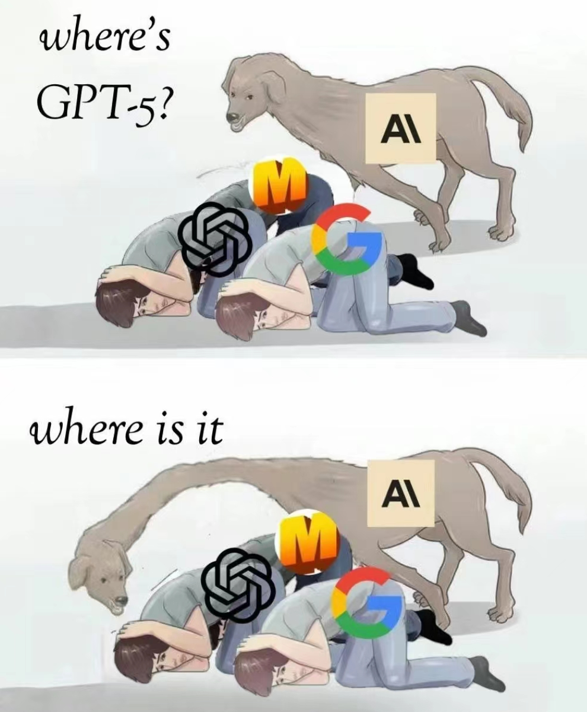
Under the suppression-chain theory, OpenAI looks like a very effective sniper. This time, however, Claude 3 may have launched a counterattack.
OpenAI was, at that moment, dealing with Elon Musk’s lawsuit accusing the company and Sam Altman of abandoning its original open-source-oriented mission.
According to some online speculation, Anthropic may have deliberately chosen a moment when OpenAI was less able to respond instantly, launching Claude 3 quickly enough to catch its rival off guard.
Whether Anthropic CEO Dario Amodei, or anyone else in the large-model community, knows the exact state of OpenAI’s internal models is another question. But most observers assume OpenAI has more advanced systems under development and that GPT-5 is ultimately a matter of timing. Musk’s lawsuit, regardless of whether it succeeds legally, may therefore have given companies like Anthropic a valuable window of time.
Does that mean a late entrant has no chance under OpenAI’s suppression chain?
A paper in Management Science, titled I Don’t “Recall”: The Decision to Delay Innovation Launch to Avoid Costly Product Failure, studies a related strategic setting. Imagine a competitive market where every company is rushing to launch an innovative product. Releasing quickly creates an obvious risk: the product may not have been tested thoroughly enough—for example, a foundation model may not have received sufficient safety review or alignment work—and may later need to be “recalled.”
Using a dynamic game model, the paper finds that even when early launch creates a high recall risk, launching quickly can still be the optimal strategy if a company expects its competitor to do the same. An early launch may create the possibility that a rival suffers a costly recall and even exits the market, producing a winner-takes-all outcome.
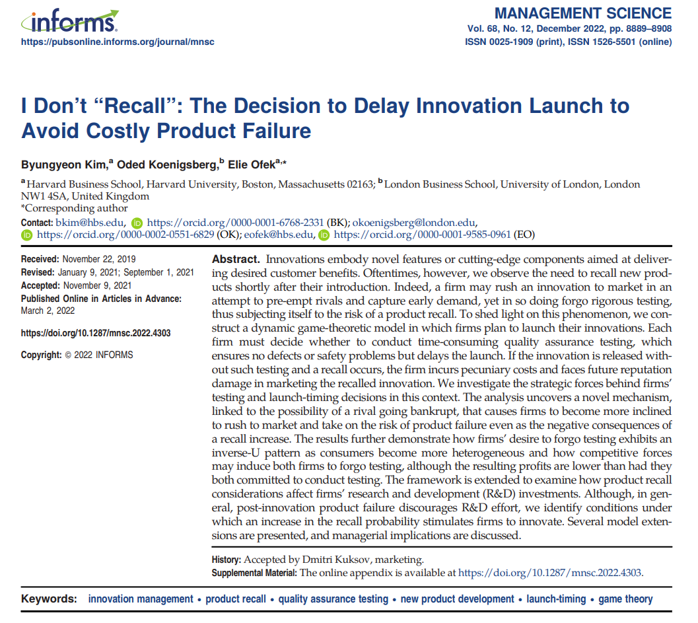
Applied to the suppression-chain setting, Claude 3 may indeed invite a counter-release from OpenAI, but it also pressures OpenAI to launch GPT-4.5 or GPT-5 sooner. That forces OpenAI to bear a larger risk if its “star product” fails to meet expectations—similar to the reputational damage Google suffered when the Bard launch demo contained a factual error.
Because OpenAI’s reputation is so much larger, the cost of a major product failure could also be far higher for OpenAI than for Anthropic. The intense public expectation surrounding GPT-5 therefore becomes a genuine double-edged sword.
There is another weakness in the suppression-chain logic: it relies on the high degree of product homogeneity in today’s market.
OpenAI’s ChatGPT, Anthropic’s Claude, and Google’s Gemini still do not exhibit overwhelming “irreplaceability.” In China’s “battle of a hundred models,” many products are likewise still trying to catch up with the functionality of GPT-style systems. Under these conditions, one much stronger general-purpose GPT-like model can indeed overshadow a hundred or even a thousand similar competitors.
But if companies pursue differentiated competition—for example, models specialized for vertical domains or small models optimized for on-device use—OpenAI’s suppression strategy may no longer work nearly as well.
OpenAI still possesses a powerful first-mover advantage, but that does not make its position permanently secure. Being at the top of the suppression chain does not guarantee that every attempt at suppression will succeed.
Late entrants can also enjoy second-mover advantages. Once OpenAI has paid the cost of trial and error and demonstrated which routes are viable, followers can avoid many of those early mistakes and move faster with less risk.
And as Musk’s lawsuit illustrates, a mature market leader can face unexpected legal, organizational, political, and reputational threats. Those moments can create opportunities for challengers.
So beyond the simple fact that Claude 3 launched with higher scores on several benchmarks, the more interesting story may be that the title of “world’s strongest model” briefly changed hands—and that this shift tells us something about market structure, timing, competitive strategy, and the limits of OpenAI’s first-mover advantage.